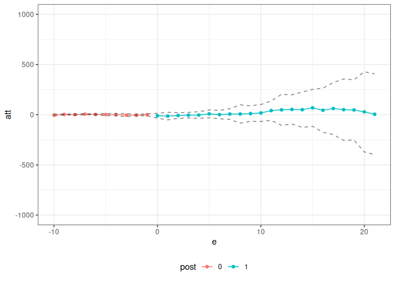
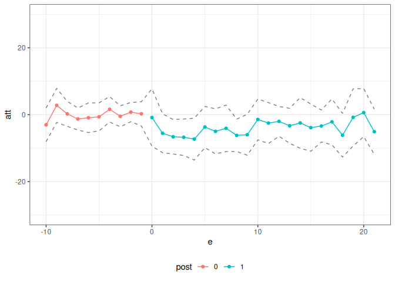

Note: This package is only lightly maintained. Most of the general functionality it provides — including empirical bootstrap inference and aggregation of group-time average treatment effects — is now available through the
pte_defaultmethod in theptetoolspackage (GitHub). The main reason to useppedirectly is for the pandemic-specific application and estimators described below.
The ppe package contains code for estimating policy effects during the pandemic. It is the companion code for Callaway and Li (2023), Policy Evaluation during a Pandemic. The central idea of that paper is to compare locations who implemented some Covid-19 related policy to other locations that did not implement the policy and that had the same pre-treatment values of Covid-19 related characteristics. These characteristics definitely include (i) the current number of cases and (ii) the number of susceptible individuals (or equivalently the cumulative number of cases). They might also include demographic characteristics, population densities, region of the country, among others.
This amounts to an unconfoundedness-type strategy. In the paper, we compare it to a difference in differences strategy and argue that the unconfoundedness strategy is likely to be more appropriate to evaluate policies during the pandemic. The rationale for this argument is that epidemic models from the epidemiology literature are highly nonlinear but do not involve individual-level unobserved heterogeneity. See our five minute summary for additional discussion along these lines.
In practice, we use a doubly robust estimation procedure that estimates both the propensity score (which is related to the treatment assigment model) and an outcome regression for untreated potential outcomes (which is related to the epidemic model). An important advantage of this is that, at least to some extent, it allows us to side-step the issue of estimating a full epidemic model.
To demonstrate our approach, we provide a shortened version of the application from our paper which is about the effect of shelter-in-place orders early in the pandemic. We have state-level data about Covid-19 cases, tests, and the timing when a state adopted a shelter-in-place order.
# load the data
data(covid_data)
# formula for covariates
xformla <- ~ current + I(current^2) + region + totalTestResultsA first issue is that there are major overlap violations — for example, there are just not good comparison states for New York. As a first step, we drop those:
trim_id_list <- lapply(c(10,15,20,25,30),
did::trimmer,
tname="time.period",
idname="state_id",
gname="group",
xformla=xformla,
data=covid_data,
control_group="nevertreated",
threshold=0.95)
time_id_list <- unlist(trim_id_list)
# states that we will drop
unique(subset(covid_data, state_id %in% time_id_list)$state)
#> [1] "AL" "CA" "CO" "CT" "FL" "GA" "IL" "LA" "ME" "MI" "MO" "MS" "NH" "NJ" "NY"
#> [16] "PA" "RI" "SC" "TX" "VT" "WA"
covid_data2 <- subset(covid_data, !(state_id %in% time_id_list))Next, we use the pte package to estimate policy effects. This basically involves us only having to write a new function to compute group-time average treatment effects — for us, it is the function covid_attgt (which is essentially just a function to compute doubly robust treatment effect estimates under unconfoundedness and that include lags of some variables).
res <- pte(yname="positive",
gname="group",
tname="time.period",
idname="state_id",
data=covid_data2,
subset_fun=two_by_two_subset,
setup_pte_fun=setup_pte_basic,
attgt_fun=covid_attgt,
xformla=xformla,
max_e=21,
min_e=-10)
#> Warning in pte(yname = "positive", gname = "group", tname = "time.period", : 'pte' is deprecated.
#> Use 'pte2' instead.
#> See help("Deprecated")
#> Warning in BMisc::getListElement(selective.se.inner, "se"): 'BMisc::getListElement' is deprecated.
#> Use 'get_list_element' instead.
#> See help("Deprecated")
#> Warning in BMisc::getListElement(selective.se.inner, "inf.func"): 'BMisc::getListElement' is deprecated.
#> Use 'get_list_element' instead.
#> See help("Deprecated")
#> Warning in BMisc::getListElement(dynamic.se.inner, "se"): 'BMisc::getListElement' is deprecated.
#> Use 'get_list_element' instead.
#> See help("Deprecated")
#> Warning in BMisc::getListElement(dynamic.se.inner, "inf.func"): 'BMisc::getListElement' is deprecated.
#> Use 'get_list_element' instead.
#> See help("Deprecated")
summary(res)
#>
#> Overall ATT:
#> ATT Std. Error [ 95% Conf. Int.]
#> 14.8882 79.4475 -140.8261 170.6024
#>
#>
#> Dynamic Effects:
#> Event Time Estimate Std. Error [95% Conf. Band]
#> -10 -3.7266 3.5727 -12.8078 5.3545
#> -9 2.6607 1.5442 -1.2643 6.5857
#> -8 0.8290 2.5877 -5.7485 7.4065
#> -7 5.2843 2.3458 -0.6782 11.2469
#> -6 2.8555 1.9498 -2.1005 7.8115
#> -5 1.3589 4.6737 -10.5208 13.2386
#> -4 0.3294 4.0833 -10.0496 10.7083
#> -3 -4.2227 5.2468 -17.5591 9.1137
#> -2 -3.8447 2.4588 -10.0945 2.4050
#> -1 -0.2234 3.5167 -9.1621 8.7154
#> 0 -10.8156 10.8095 -38.2912 16.6600
#> 1 -13.7998 14.5778 -50.8536 23.2540
#> 2 -7.8432 11.0886 -36.0281 20.3417
#> 3 -4.5541 11.9893 -35.0284 25.9201
#> 4 -3.5368 11.8730 -33.7156 26.6419
#> 5 8.5221 12.9938 -24.5055 41.5497
#> 6 1.1140 13.6408 -33.5583 35.7863
#> 7 6.6384 21.0232 -46.7984 60.0753
#> 8 7.1288 34.7259 -81.1374 95.3950
#> 9 10.8758 29.5162 -64.1483 85.8999
#> 10 17.5057 32.9132 -66.1531 101.1645
#> 11 40.8318 42.1074 -66.1966 147.8602
#> 12 48.6134 56.4684 -94.9179 192.1447
#> 13 52.4228 67.6682 -119.5761 224.4217
#> 14 50.2000 42.6587 -58.2296 158.6297
#> 15 68.2960 86.8683 -152.5056 289.0976
#> 16 44.7305 77.7393 -152.8670 242.3280
#> 17 61.4670 77.5732 -135.7085 258.6424
#> 18 50.4635 116.4089 -245.4243 346.3513
#> 19 47.3392 110.6619 -233.9410 328.6194
#> 20 28.6326 137.6517 -321.2501 378.5153
#> 21 4.3445 146.0782 -366.9567 375.6457
#> ---
#> Signif. codes: `*' confidence band does not cover 0and we can also plot the results in event study.
ggpte(res) + ylim(c(-1000,1000))
To conclude, we provide estimated effects of the effects of shelter-in-place orders on travel. In the paper, we mainly consider the case where (i) the policy can have a direct effect on travel, (ii) the policy can have a direct effect on Covid-19 cases, and (iii) Covid-19 cases can have their own effect on travel. This means that the policy can have an indirect effect on travel through its effect on Covid-19 cases. We show in the paper that neither standard DID (ignoring cases) nor DID that includes current cases as a covariate delivers a suitable estimate of the effect of the policy on travel in this case. We propose an alternative estimator that accounts for the indirect effect of the policy on travel through its effect on cases, and show code for this approach below.
oo_res <- pte(yname="retail_and_recreation_percent_change_from_baseline",
gname="group",
tname="time.period",
idname="state_id",
data=covid_data2,
subset_fun=two_by_two_subset,
setup_pte_fun=setup_pte_basic,
attgt_fun=other_outcome_attgt,
xformla=xformla,
max_e=21,
min_e=-10,
Iname="current",
adjustI=TRUE)
#> Warning in pte(yname = "retail_and_recreation_percent_change_from_baseline", : 'pte' is deprecated.
#> Use 'pte2' instead.
#> See help("Deprecated")
#> Warning in BMisc::getListElement(selective.se.inner, "se"): 'BMisc::getListElement' is deprecated.
#> Use 'get_list_element' instead.
#> See help("Deprecated")
#> Warning in BMisc::getListElement(selective.se.inner, "inf.func"): 'BMisc::getListElement' is deprecated.
#> Use 'get_list_element' instead.
#> See help("Deprecated")
#> Warning in BMisc::getListElement(dynamic.se.inner, "se"): 'BMisc::getListElement' is deprecated.
#> Use 'get_list_element' instead.
#> See help("Deprecated")
#> Warning in BMisc::getListElement(dynamic.se.inner, "inf.func"): 'BMisc::getListElement' is deprecated.
#> Use 'get_list_element' instead.
#> See help("Deprecated")
summary(oo_res)
#>
#> Overall ATT:
#> ATT Std. Error [ 95% Conf. Int.]
#> -3.9162 1.9043 -7.6485 -0.184 *
#>
#>
#> Dynamic Effects:
#> Event Time Estimate Std. Error [95% Conf. Band]
#> -10 -3.0210 2.4073 -10.3959 4.3539
#> -9 2.7846 1.3531 -1.3606 6.9299
#> -8 0.2543 1.4666 -4.2388 4.7475
#> -7 -1.2765 0.9152 -4.0804 1.5273
#> -6 -0.9085 1.2627 -4.7767 2.9597
#> -5 -0.6359 1.4899 -5.2004 3.9286
#> -4 1.6184 1.1964 -2.0468 5.2837
#> -3 -0.4660 1.0718 -3.7496 2.8176
#> -2 0.7693 0.7319 -1.4730 3.0117
#> -1 0.2643 1.1686 -3.3160 3.8445
#> 0 -0.8510 2.1805 -7.5311 5.8290
#> 1 -5.5461 2.0183 -11.7292 0.6370
#> 2 -6.5928 1.6265 -11.5758 -1.6099 *
#> 3 -6.7447 1.7367 -12.0652 -1.4243 *
#> 4 -7.2925 1.8923 -13.0897 -1.4954 *
#> 5 -3.6784 2.2736 -10.6439 3.2871
#> 6 -4.9731 2.0578 -11.2773 1.3311
#> 7 -4.0683 2.2042 -10.8210 2.6844
#> 8 -6.1649 1.7244 -11.4477 -0.8821 *
#> 9 -5.9830 1.9759 -12.0363 0.0703
#> 10 -1.4185 2.4645 -8.9687 6.1317
#> 11 -2.4974 2.2211 -9.3020 4.3072
#> 12 -1.9884 1.7679 -7.4044 3.4275
#> 13 -3.3056 2.0270 -9.5155 2.9044
#> 14 -2.4633 2.3299 -9.6010 4.6744
#> 15 -3.8627 1.9979 -9.9835 2.2582
#> 16 -3.3849 1.9396 -9.3270 2.5571
#> 17 -2.1404 2.2201 -8.9419 4.6612
#> 18 -6.1309 1.7688 -11.5498 -0.7119 *
#> 19 -0.7883 2.2083 -7.5536 5.9770
#> 20 0.6190 2.6606 -7.5319 8.7700
#> 21 -5.0789 2.9730 -14.1870 4.0291
#> ---
#> Signif. codes: `*' confidence band does not cover 0
# make an event study plot
ggpte(oo_res) + ylim(c(-30,30))